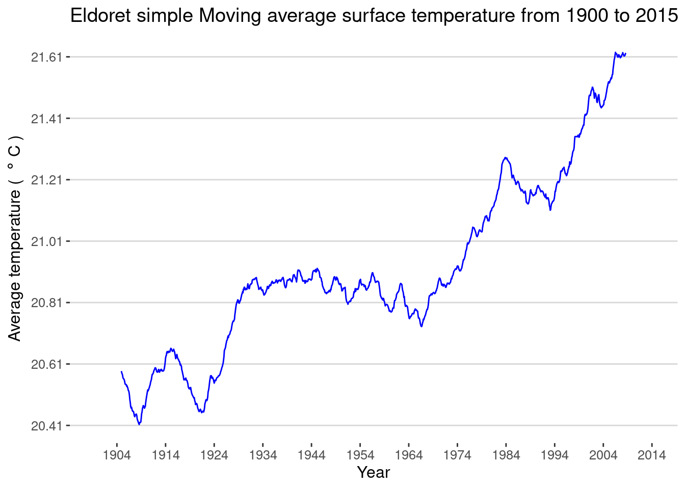
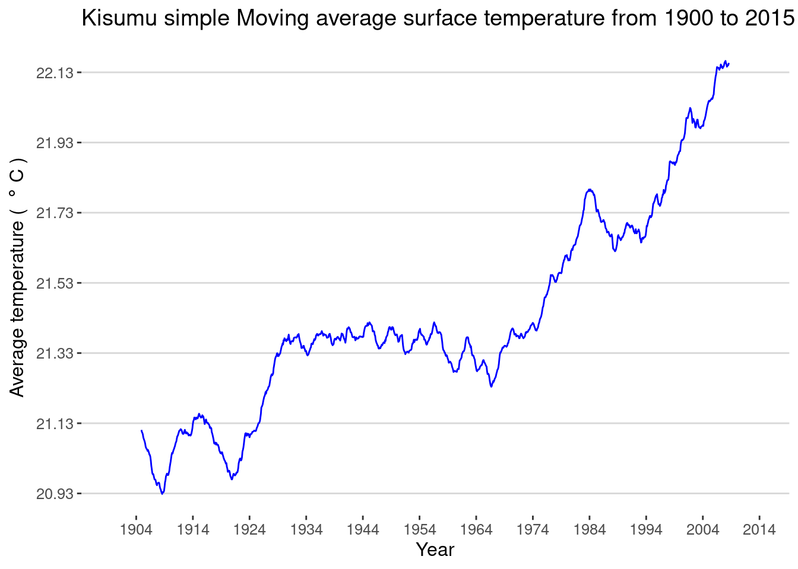
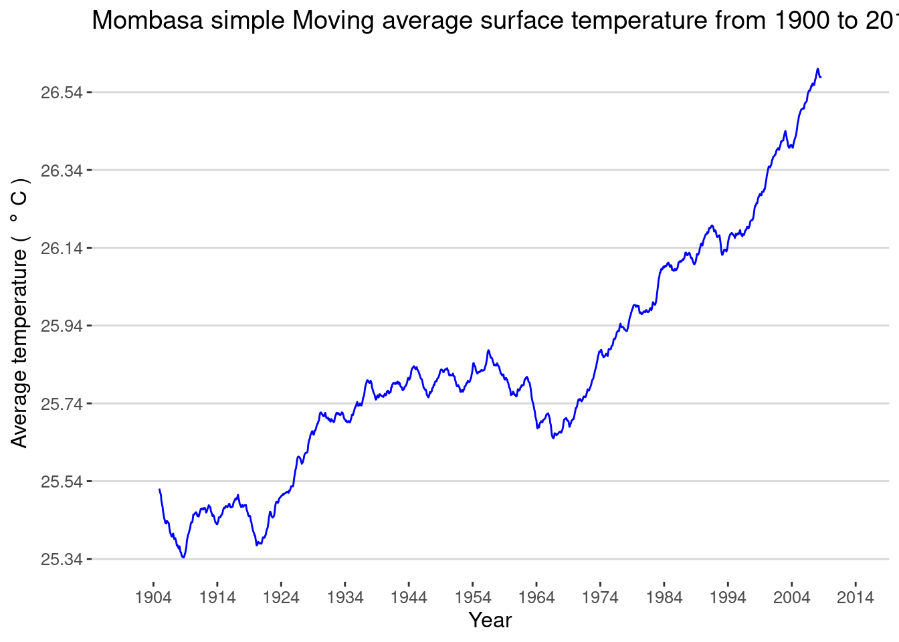
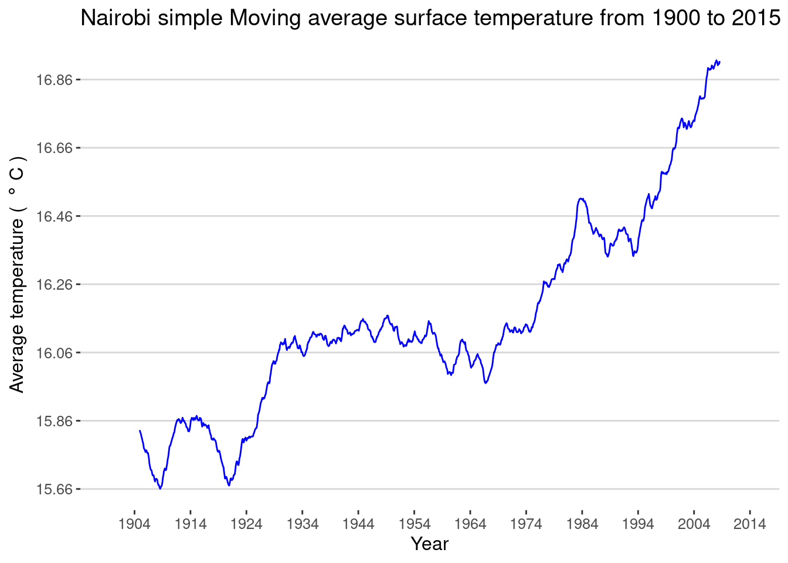
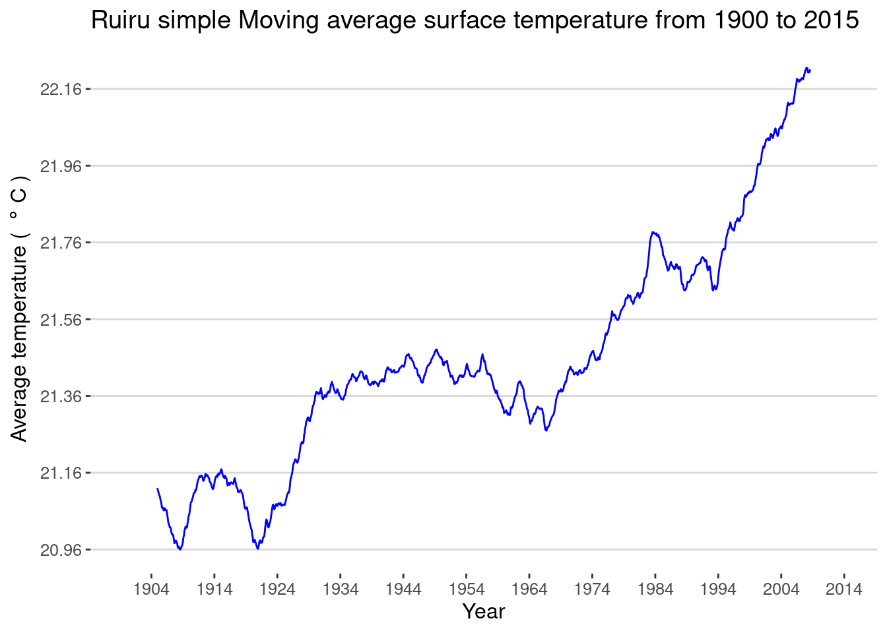

library(tidyverse)
library(data.table)
library(here)
library(knitr)
library(foreach)
library(ggthemes)The trend of Earth surface temperatures in Kenyan towns
#global_land_temp <- fread(here("data/GlobalLandTemperaturesByCity.csv"))
load(here("data/GlobalLandTemperaturesByCity.rda"))
global_land_temp <- global_land_temp[!is.na(AverageTemperature)]
global_land_temp[, lat := str_extract(Latitude, "N|S")]
global_land_temp[, lon := str_extract(Longitude, "E|W")]
lat_cols <- c("Latitude", "Longitude")
global_land_temp[ ,(lat_cols) := lapply(.SD, gsub, pattern = "N|W|E|S", replacement = ""),
.SDcols = lat_cols]
global_land_temp[, Latitude := as.numeric(Latitude)]
global_land_temp[, Latitude := ifelse(lat == "S", - Latitude, Latitude)]
global_land_temp[, Longitude := as.numeric(Longitude)]
global_land_temp[, Longitude := ifelse(lon == "W", - Longitude, Longitude)]cities_dates <- global_land_temp[, .(min_date = min(dt),
max_date = max(dt), freq = .N), by = City][
min_date < "1904-01-01" &
max_date > "2013-08-01" & freq > 1400
]
kenya <- global_land_temp[Country == "Kenya"]kisumu <- global_land_temp[City == "Kisumu"]towns = unique(kenya$City)
#towns <- sample(towns, 5)
#kenya <- global_land_temp[City %in% towns ]
kenyaTowns = split(kenya, kenya$City)
cities <- foreach(i = 1:length(kenyaTowns)) %do% {
this = kenyaTowns[[i]]
this = this[!is.na(AverageTemperature) & dt >= "1900-01-01"]
this[, AverageTemperature := ts(AverageTemperature, start = c(1900, 1), end = c(2013, 8), frequency = 12)]
this[, AverageTemperature := stats::filter(AverageTemperature, rep(1, 120)/120, method = "con", sides = 2)]
}summaryStats <- list()
for(i in 1:length(kenyaTowns)){
this <- setDT(kenyaTowns[[i]])
this <- this %>% group_by(City, dt) %>%
summarise(max = max(AverageTemperature, na.rm = T)) %>% arrange(desc(max))
summaryStats[[i]] <- this[1:2, ]
}
rbindlist(summaryStats) %>% kable| City | dt | max |
|---|---|---|
| Eldoret | 2005-02-01 | 24.536 |
| Eldoret | 1997-03-01 | 24.052 |
| Kisumu | 2005-02-01 | 24.636 |
| Kisumu | 1997-03-01 | 24.301 |
| Mombasa | 2003-03-01 | 28.974 |
| Mombasa | 1987-03-01 | 28.903 |
| Nairobi | 1987-03-01 | 19.446 |
| Nairobi | 2005-02-01 | 19.431 |
| Nakuru | 1987-03-01 | 19.446 |
| Nakuru | 2005-02-01 | 19.431 |
| Ruiru | 1987-03-01 | 25.064 |
| Ruiru | 2005-03-01 | 24.554 |
library(plotly)
titl = paste(towns, "simple Moving average surface temperature from 1900 to 2015")
y = expression("Average temperature ( " * degree~C * " )")
#my_plots <-htmltools::tagList()
my_plots <- list()
for (i in 1:length(cities)) {
this = cities[[i]]
this[, dt2 := dt]
this[, Date := as.character(dt2)]
temp_max <- max(this$AverageTemperature, na.rm = T)
temp_min <- min(this$AverageTemperature, na.rm = T)
mybreaks = seq(temp_min, temp_max, by = .2) %>% round(2)
p = ggplot(this, aes(x = dt2, y = AverageTemperature, label = Date))+
geom_line(colour = "blue")+ theme_hc()+
labs(x = "Year", y = y, title = titl[i])+
scale_y_continuous(breaks = mybreaks)+
#ylim(min(this$AverageTemperature)-2, max(this$AverageTemperature)+2)+
scale_x_date(date_breaks = "10 years", date_labels = "%Y")
my_plots[[i]] = p # ggplotly(p) %>% as_widget()
#p
}
my_plots[[1]]
[[2]]
[[3]]
[[4]]
[[5]]
[[6]]